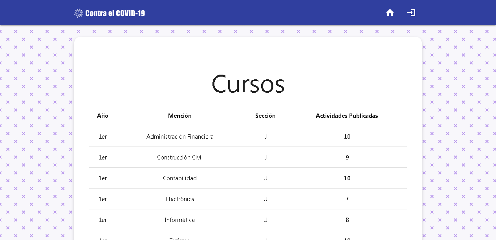
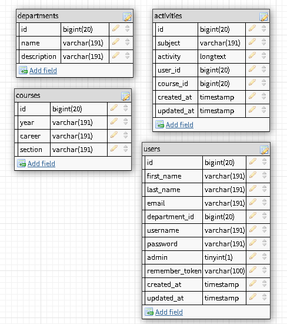

Si eres estudiante de la E.T. "Francisco Fajardo" te habras
dado cuenta que al entrar a
www.franciscofajardo.com
este muestra algo muy distinto a lo que anteriormente vimos,
tiene un diseño algo moderno, y muy parecido a las
interfaces que tenemos en los móviles Android. Algo llamado
Material Design, ese algo en donde se te hace muy
familiar navegar por el sitio.
Entonces, ¿qué paso con la anterior página?. Lo que paso con
la anterior página fue lo que ya habiamos dicho
anteriormente, el Francisco Fajardo necesitaba corregir los
problemas que tenia esto, lo de las imágenes y los videos
principalmente. Entonces, decidieron crear un nuevo sistema,
y con esto se responde la pregunta.
Pero, ¿quién lo creo?, seguramente ya habrás visto mi nombre
en muchas partes de este informe pero de todas formas lo voy
a decir, lo cree yo, Leober Ramos, tan solo un estudiante de
5to de Informática... Espera, ¿un estudiante creo un sistema
mejor que el que hizo un profesor?... Pues, efectivamente,
pero no vengo aquí a mostrar mi ego ni nada por el estilo,
vengo a explicar como fue que hice todo esto, como corregi
los errores que tenia el anterior, y para mostrar que si
crees en ti mismo puedes hacer lo que sea. Sin embargo
obviamente todo esto no se logro solo con frases
inspiradoras.
Para empezar, hay que partir de la idea de que todo esto fue
requerido en una semana o menos, me contactaron una semana
antes de empezar el nuevo año escolar, querían algo que
resolviera los problemas anteriormente dichos, así que me
puse manos a la obra con esto, estaba seguro de que podría
hacerlo en menos de una semana, así que veamos como me fue.
Quería hacer un desarrollo moderno, algo que no estuviera
hechos con las tecnologías que usaba el anterior sistema,
como el viejo pero querido jQuery. Así que decidí
hacer el frontend con React.js -una librería
moderna para hacer interfaces de usuario con JavaScript-, y
el backend con PHP. Debía de usar un editor en
donde los profesores podrían escribir sus actividades
cómodamente, y que obviamente, soportara videos y imágenes,
y me encontré con muchos, pero decidí usar
CKEditor. Y esto, muy pero muy resumido, es lo que
usé para hacer la página, además de mi computador con Linux,
Git para manejar el flujo del proyecto y GitHub para hacer
código abierto el proyecto.
Todo marchaba bien, podría haber entregado el proyecto en
menos de una semana... O eso creí, empezaron a surgir
problemas, como el simple hecho de que debía de construir
una API con PHP para que el cliente con React.js se
comunique y obtenga los datos, pero, entonces, tengo que
mantener dos proyectos en paralelo que hacen uno solo, la
API, y el cliente; tengo que hacer que la API sea segura o
si no cualquier atacante podría destruir todos los datos de
las actividades, y tengo que hacer que el cliente sea seguro
o si no cualquier atacante podría hacer lo mismo.
Con 3 días antes de la entrega del proyecto decidí eliminar
todo el progreso que tenía y empezar de nuevo. Empezar de
nuevo con un framework que nunca había utilizado, y no sabía
como empezar, pero al ser un desarrollador web, y conocer
los conceptos del patrón MVC que utilizaba este
framework, pude empezar a utilizarlo a las pocas horas. Y
estoy hablando de Laravel.
Laravel es un framework de PHP que me ayudaría mucho a
facilitar las cosas, entre ellas la seguridad y el manejo de
la base de datos. Así que empece con el clásico comando en
consola en donde cree el proyecto del Sistema Web AF usando
Laravel:
Así en el tiempo limite que me quedaba construí lo que
pueden ver a continuación. A pesar de todo, seguí utilizando
CKEditor para que los profesores tengan un editor comodo.
Pueden disfrutar del código que escribí en el enlace que va
estar a lo ultimo de esta página, es totalmente Código
Abierto y Software Libre, mi política para crear software es
esa, y es la que use para crear esto.

Bien, ahora, ¿cómo fueron los días en los que construí
esto?, seguramente habrán sido lo peor para algunos, y lo
más fácil del mundo para otros. Para mi fue una experiencia
estresante pero divertida, por que a pesar de mi corta edad
tengo tantos conocimientos sobre este mundo que es
increíble, y a veces me admiro a mi mismo por eso, y es por
eso que fue divertido, aprender nuevos conceptos, construir
el algoritmo de todo este sistema en mi mente y luego ir
resolviendo cada uno de los problemas fue divertido la
verdad. Pude haber terminado el proyecto en más tiempo si no
hubiera estado interesado, pero mi interes se basaba en eso,
que me encanta programar, y por eso pude hacer algo como
esto en 3 días.
La base de datos... ¿cómo se encuentran modelados los datos
en este sistema?. El esquema es muy sencillo, no se
requieren otras bases de datos o conexiones hacia hojas de
calculo, la nube o otro sistema. Hay 4 tablas, conectadas
con el modelo entidad-relación. Es decir, los cursos tienen
actividades, las actividades tienen profesores, los
profesores tienen departamentos, y los departamentos a
profesores; es algo confuso pero cuando lo entiendes se
vuelve realmente fácil entender la
Normalización de base de datos. Además de esto, los
nombres de los campos están en inglés para evitar usar
tildes o otro carácter español en el código, también por que
es una buena práctica hacer esto.

Luego de hablar de la base de datos, no queda mucho de que
hablar, inicialicé las rutas, cree los modelos y los
controladores, un middleware HTTP para que los profesores
que no sean administradores no puedan hacer ninguna
operación con otros usuarios, o los departamentos. Utilicé
MaterializeCSS como framework de CSS para estilizar
toda la página y darle ese toque que dije al inicio, el
toque del Material Design.
La moraleja de esta historia, o de este proyecto, es que
no seas un estudiante eterno, no creas que
por que nunca has hecho un trabajo real nunca podrás hacer
uno por que no estas listo. Piensas que aún tienes que
estudiar, que aún te falta conocimiento para enfrentarte a
lo que ahí allí afuera, y no. El verdadero conocimiento se
adquiere haciendo trabajos reales para personas reales, nada
más. Adquirirás conocimiento haciendo proyectos de prueba,
pero adquirirás experiencia al hacer un trabajo real para
una persona real.
Si quieres saber más a detalle todos los pasos que realize
para desarrollar el proyecto puedes verlo aquí: